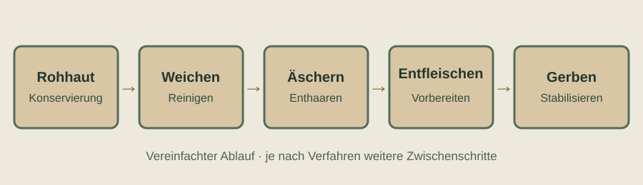
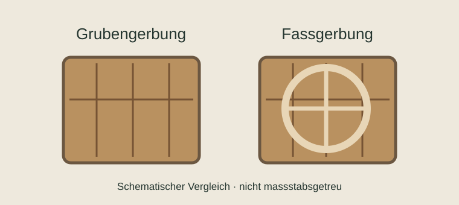

Von der Rohhaut zum Treibriemenleder
Ein Ledertreibriemen begann nicht erst in der Riemenwerkstatt. Seine Eigenschaften wurden bereits durch die Auswahl der Rinderhaut, ihre Konservierung, die Gerbung und die Zurichtung geprägt. Diese Seite erläutert die einzelnen Schritte mit dem Schwerpunkt auf der Zeit um 1900.
Heutige Gerbereien zeigen, wie einzelne traditionelle Verfahren weiterleben. Ihre Arbeitsabläufe sind jedoch nicht ohne Weiteres mit denen einer Gerberei des Jahres 1900 gleichzusetzen.
Die Arbeitsschritte im Überblick

Diese Darstellung ordnet die wesentlichen Stationen der Lederherstellung. Sie ist eine vereinfachte technische Übersicht, keine überlieferte Arbeitsfolge aus der Rotgerberei Gebrüder Krafft.
1. Die Rinderhaut als Rohstoff
Die Rinderhaut war ein wertvoller Rohstoff für verschiedene Lederarten. Nach der Schlachtung musste sie rasch verarbeitet oder konserviert werden, damit sie nicht verdarb. Eine verbreitete Konservierungsmethode war das Salzen: Es entzieht der Haut Wasser und verzögert ihre Zersetzung.
Ein heutiges Beispiel liefert die Manufaktur CHALA im Schwarzwald, die die Salzkonservierung von Fellen beschreibt. Das ist ein Anschauungsbeispiel für die Rohwarenbehandlung, nicht für die konkrete Beschaffung oder Lagerung bei Gebrüder Krafft.

2. Welche Teile der Haut eigneten sich?
Für einen belastbaren Antriebsriemen waren eine möglichst gleichmässige Lederstärke und eine geeignete Faserstruktur wichtig. Von besonderem Interesse war der Croupon, der feste Kernbereich der Rinderhaut im Rücken- und Hinterteil. Die lockerer strukturierten Rand- und Bauchpartien eigneten sich nicht für jeden Einsatzzweck gleich gut.
Auch der heutige Treibriemenhersteller W. Funcke nennt die Verwendung von Kernstücken der Rinderhaut. Das bestätigt die Bedeutung der Materialauswahl, sagt aber noch nichts darüber aus, welche Hautpartien Krafft verwendete.
3. Weichen, Äschern und Entfleischen
Vor der Gerbung musste die Rohhaut vorbereitet werden. Beim Weichen wurde sie gereinigt und wieder mit Wasser durchfeuchtet. Beim Äschern wurden die Haare gelöst; anschliessend entfernte man beim Entfleischen anhaftende Gewebe- und Fettreste. Je nach Verfahren folgten weitere Arbeiten wie Entkälken, Beizen und die Einstellung der für die Gerbung benötigten Bedingungen.
Diese Schritte sind in heutigen Darstellungen der Lederherstellung gut nachvollziehbar. Welche Maschinen, Chemikalien und Reihenfolgen um 1900 im einzelnen Betrieb verwendet wurden, muss anhand zeitgenössischer Quellen geprüft werden.

4. Loh- oder Rotgerberei
Bei der Lohgerbung, auch Rotgerberei genannt, wirkten pflanzliche Gerbstoffe auf die vorbereiteten Häute ein. Traditionell wurden dafür unter anderem gerbstoffreiche Rinden von Eichen und Fichten verwendet. Je nach Lederart und Verfahren konnte die Gerbung längere Zeit beanspruchen.
Die pflanzliche Gerbung war für kräftige Lederarten wichtig, darunter Sohlen- und bestimmte Riemenleder. Sie ist aber nicht mit einer einzigen unveränderlichen Methode gleichzusetzen: Gruben, Fässer, Gerbstoffe und Behandlungszeiten unterschieden sich.
Eine heutige Gerbereibeschreibung zeigt sowohl Gruben- als auch Fassgerbung mit pflanzlichen Gerbstoffen. Für die historische Darstellung dient sie als technischer Vergleich, nicht als Beleg für die Ausstattung einer Gerberei um 1900.

5. Andere Gerbverfahren
Neben der Lohgerbung bestanden weitere Verfahren. Die traditionelle Weissgerberei arbeitete insbesondere mit Alaun und lieferte andere Lederqualitäten. Bei der Sämischgerbung wurden geeignete Fette beziehungsweise Öle zur Gerbung eingesetzt. Gegen Ende des 19. Jahrhunderts gewann ausserdem die Chromgerbung an Bedeutung.
Für Treibriemen wurden sowohl lohgare als auch chromgare Leder verwendet, wie heutige Herstellerangaben und historische Fachliteratur zeigen. Aus der blossen Existenz dieser Verfahren lässt sich jedoch nicht ableiten, welches Krafft für seine Riemen einsetzte.
6. Zurichtung und Fertigleder
Nach der Gerbung musste das Leder entwässert, auf die benötigte Stärke gebracht und je nach Verwendungszweck weiter behandelt werden. Zu den möglichen Arbeitsschritten gehörten Abwelken, Falzen, Fetten, Trocknen, Walzen und das abschliessende Sortieren.
Eine heutige vegetabile Gerberei beschreibt beispielsweise das Trocknen auf aufgenagelten Holzbrettern. Solche anschaulichen Arbeitsweisen helfen beim Verständnis; ihre historische Verbreitung und die jeweiligen Maschinen müssen aber gesondert belegt werden.
Erst das zugerichtete Leder wurde in der Riemenherstellung weiterverarbeitet: zugeschnitten, gegebenenfalls gestreckt, an den Enden vorbereitet und zu einem verwendbaren Treibriemen verbunden. Diesen zweiten Produktionsabschnitt erläutert die Seite zur Treibriemenherstellung.
7. Gebrüder Krafft: Was lässt sich sagen?
Für Gebrüder Krafft ist die historische Rotgerberei als Teil der Unternehmensgeschichte bekannt. Ebenso ist die Herstellung von Maschinenriemen belegt. Daraus ergibt sich eine naheliegende Verbindung zwischen Lederherstellung und Riemenproduktion.
Noch offen bleibt, ob Krafft das gesamte für Treibriemen benötigte Leder selbst gerbte, welche Rohhäute bezogen wurden, wie lange die Gerbung dauerte und ob später zusätzliche Gerbverfahren eingesetzt wurden. Die hier beschriebenen allgemeinen Verfahren dürfen deshalb nicht als gesicherter Krafft-Produktionsablauf ausgegeben werden.
Mehr dazu auf der Seite Gebrüder Krafft.
Bildmaterial zur Lederherstellung
Zu mehreren beschriebenen Arbeitsgängen liegen Bildbeispiele auf den Webseiten heutiger Gerbereien vor. Bis zur Klärung der Bildrechte verlinken wir die Originalseiten, statt die Fotografien zu übernehmen.
Eine weitere Bildserie zur vegetabilen Gerberei (Weichen, Äschern, Spalten, Gerben, Trocknen und Walzen) ist für eine spätere Bildergalerie vorgemerkt. Urheber, Originalquelle und Bildrechte werden vor einer Übernahme geklärt.
Quellen und Vergleichsmaterial
- A. Lueger, Lexikon der gesamten Technik (1904), Stichwort „Lederriemen“ – zeitgenössischer technischer Hintergrund.
- Lederpedia: Treibriemenleder – technische Fachinformationen, heutige Darstellung.
- W. Funcke: Firmengeschichte – historischer Vergleichsbetrieb.
- CHALA: Black Forest – heutige Konservierung von Fellen.
- Gemeinde Frickingen, Darstellung zur Gerberei Mantz in Leustetten – historische Gerbverfahren und museale Transmission; genaue Seitenadresse noch zu erfassen.
- Darstellung einer heutigen vegetabilen Gerberei („Die Gerber – traditionelles Handwerk mit langer Geschichte“) – Arbeitsschritte und Abbildungen; Betreiber und genaue URL noch zu erfassen.
Die genannten heutigen Praxisbeispiele sind Vergleichsmaterial. Fremde Fotografien werden erst nach einer gesonderten Freigabe übernommen.